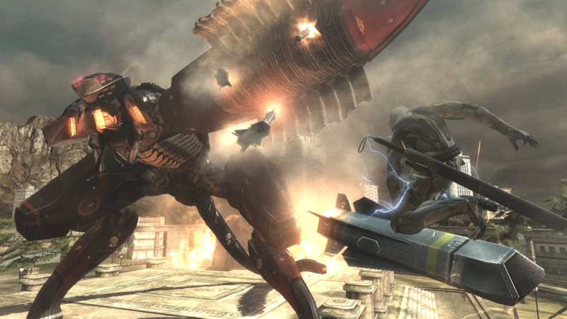

O jogo se passa quatro anos após Metal Gear Solid 4: Guns of the Patriots, nesse período, houve o fim das SOPs, a antiga política de financiamento de EMP (Sigla para Empresas Militares Privadas), com a alegação de que "o mundo precisa de paz." Metal Gear Rising ocorre durante um ponto na cronologia da série em que Raiden já começou a sua transformação na forma de cyborg, ainda que com uma aparência diferente e um pouco mais rude do aquele visto em Metal Gear Solid 4, além disso, Raiden trabalha para uma espécie de "Anti-EMPs", a Maverick, e não mais para o governo dos Estados Unidos, como era visto nos jogos anteriores.
Arquivo R-00: Serviço de Guarda Uma cutscene inicial mostra uma limousine em um país não identificado, A frente e atrás do carro estão dois veículos fortemente armados, dentro dessa limousine estão o presidente do país, N'Mani e o vice-presidente. Além deles estão Raiden e Courtney, uma mulher que trabalha junto com Raiden na Maverick, uma "Anti-EMP" liderada por um russo chamado Boris, nela também trabalham Kevin, melhor amigo de Raiden, e Doktor, um cientista alemão especialista em ciborgues que construiu Raiden (Mais tarde também irá trabalhar lá Wolf, uma unidade LQ-QUi resgatada por Raiden). N'Mani e Raiden conversam sobre o país, que antes estava sob uma guerra civil, mas que graças a Maverick e a Raiden, voltou a ficar sob controle, entretanto, a limousine para bruscamente porque há um homem no caminho, esse homem se revela ser um ciborgue e corta ao meio os veículos militares, a limousine foge, mas é emboscada por mais um exercito de ciborgues, Raiden saí do carro e enfrenta os ciborgues, dando tempo para o carro escapar, feito o trabalho, outra cutscene começa, nela, alguns seguranças estão defendendo a limousine, de repente chega Sundowner, um homem gordo e calvo que mata os dois seguranças e sequestra N'Mani, até que Raiden chega, ele pergunta sobre o porquê do ataque ao presidente, Sundowner responde que, com o fim da SOP, a única fonte de lucro que eles tinham havia se acabado, e para terminar ele diz: "A África está pacifica demais". E vai embora com N'Mani, Raiden tenta persegui-lo, mas de repente surge um Metal Gear RAY e entra no caminho de Raiden, que agora terá que derrota-lo para poder resgatar N'mani.
1º Boss Fight contra o Metal Gear RAY O Metal Gear RAY é um dos chefes mais fáceis de derrotar, uma vez que seus ataques são fracos e sua vida caí rapidamente, o lugar mais fácil de tirar seu HP são suas pernas, após bate-las nelas por um tempo, você poderá ativar o modo katana e cortar a blindagem das pernas, outro detalhe é que, de vez em quando, o Metal Gear vai para do lado oposto a onde estava e vai começar a atirar contra você, use a corrida ninja para desviar desses disparos. Assim que sua vida chegar a 0,1%, o Metal Gear RAY irá tentar golpeá-lo com sua espada, aperte os botões que aparecerem na tela, para se defender, jogar o Metal Gear no ar e em seguida cortar o seu braço, encerrando a luta. Após a luta, a perseguição irá continuar pelos esgotos e em seguida pela superfície novamente, ao chegar no telhado, Raiden dá de cara novamente com o Metal Gear RAY, e terá que lutar com ele novamente.
2º Boss Fight contra o Metal Gear RAY  Agora a luta fica um pouco mais difícil, pois não há muitos lugares para se defender e os ataques do Metal Gear ataques serão mais fortes, mas em compensação, haverá um novo ponto fraco exposto, que é seu rosto, acerte-o varias vezes nesse lugar para ativar o modo katana e cortar a blindagem do rosto e causar dano. Novamente, quando a vida do Metal Gear RAY chegar a 0,1% ele irá se afastar e começará a lançar misseis contra você, aperte os botões que aparecerem na tela para pular em cima dos misseis, em seguida o modo katana será ativado para você cortar o segundo braço do Metal Gear, entretanto, isso não o impede de te arremessar para uma capela em ruínas, agora você deverá usar a corrida ninja para se esquivar de mais misseis e no final, apertar outro botão que mostra na tela para cortar o Metal Gear ao meio, destruindo-o definitivamente. Uma cutscene mostra Sundowner pulando em cima de um vagão de trem, Raiden chaga um pouco depois, mas também consegue pular no trem, terminada a cutscene, Raiden persegue Sundowner pelos vagões do trem até acha-lo acorrentando N'Mani, uma nova cutscene começa, mostrando Sundowner discursando, ele diz que N'Mani errou ao tentar impedir a guerra civil, ele ainda alega que a atual política mundial está errada quando fala sobre a paz, para Sundowner, a guerra é algo que molda o ser humano, sendo assim, Sundowner alega que a humanidade deveria "criar o caos e não evita-lo", para finalizar, Sundowner mata N'Mani e joga seu corpo nos trilhos. Com raiva, Raiden tenta matar Sundowner, mas de repente aparece o mesmo ninja que destruiu os veículos militares e o impede, Sundowner foge, e o ninja desconhecido o desafia para lutar. A luta ocorre com o trem dentro do túnel, e as coisas não dão certo para Raiden: O desconhecido para a fazer uma guerra psicológica com ele, dizendo que ele não usa a espada do jeito certo, uma vez que "a espada tem sede de sangue e você (Raiden) evita isso" o ciborgue vence a guerra, e, para piorar, consegue arrancar seu olho direito e seu braço. Raiden tenta atacá-lo, mas, debilitado, caí no chão, o ciborgue está prestes a matar Raiden quando o trem sai do túnel e mostra Boris e seu exercito perseguindo o trem, o ciborgue desconhecido foge, e Raiden é resgatado.
Arquivo R-01: Golpe de Estado Passam se três semanas após o ataque ao presidente N'Mani, Raiden está agora dentro de um jato indo para a Georgia, não se mostra o rosto de Raiden, mas através das falas, percebe-se que ele ganhou um novo corpo. Doktor diz que para Raiden conseguir mais energia ele deverá cortar seu inimigos ao meio e retirar suas tripas e aperta-las para que o liquido em seu interior saia, a mesma coisa serve para abastecer o modo katana. Agora quem fala é o chefe da Maverick, Boris, ele diz que houve um golpe de estado na Georgia, muitos lideres foram mortos e uma junta militar assumiu o poder, o principal causador do golpe foi uma EMP chamada Desperado Enforcement LLC, o mesmo grupo que atacou o presidente N'Mani, o golpe foi articulado por Andeyiv Dolzayev, e Raiden tem o objetivo de mata-lo, além disso, Kevin alerta sobre o homem que quase o matou, descobre-se que seu nome é Samuel Rodrigues, mas conhecido como Jetstream Sam, Sam era filho de um ex ninja que havia aberto uma academia de praticas ninjas, entretanto, um de seus pupilos o matou, Sam se vingou destruindo a academia e matando todos os aprendizes, inclusive o assassino de seu pai, depois viajou pelo mundo como mercenário, destruindo gangues e mais gangues usando sua katana de alta frequência, então foi contratado pela Desperado, Kevin alerta que talvez ele não estaja no país, mas que de qualquer maneira era bom ficar de olho, Raiden chega no litoral Georgiano e aterrissa na praia, onde agora é possivel ver totalmente seu corpo.
João Victor de Santana Moreira
202302986668